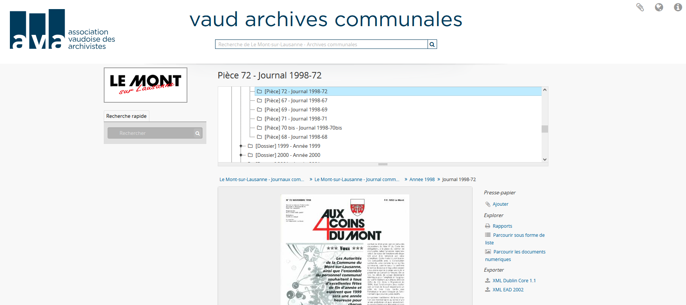

Questions d’examen
Jan Krause-Bilvin
2022-04-15
Expliquer en quelques phrases ce que sont les ressources et les containers LDP.
Expliquer et commenter le code Python ci-dessous:
import requests
url = 'http://localhost:8080/rest/records/acv/D9999'
headers = {"Content-Type": "text/turtle"}
auth = ('fedoraAdmin', 'fedoraAdmin')
data = """ <> <rico:title> 'Ceci est le titre'.
<> <rico:scopeAndContent> 'Voilà la description'.
"""
r = requests.put(url, auth=auth, data=data.encode('utf-8'), headers=headers)
print( 'Status:', r.status_code )
print( r.text )De façon générale, avec quelles méthodes peut on:
un container LDP? (Pour chaque action un verbe suffit.)
Au delà du verbe, quels sont les 2 éléments principaux qu’il faut fournir pour créer une nouvelle ressource LDP binaire? Donner un exemple de chaque.
Expliquer et commenter le shéma ci-dessous: 
Expliquer et commenter le code SHACL ci-dessous:
archvd:DossierShape
a sh:NodeShape ;
sh:targetClass archvd:Dossier ;
sh:property [
sh:path rico:isOrWasPartOf ;
sh:nodeKind sh:IRI ;
sh:minCount 1 ;
] ;
sh:property [
sh:path ldp:contains ;
sh:nodeKind sh:IRI ;
sh:minCount 1 ;
] ;
sh:property [
sh:path rico:title;
sh:datatype xsd:string ;
sh:maxlength 500 ;
sh:minCount 1 ;
sh:maxCount 1 ;
] ;
sh:property [
sh:path rico:hasEndDate ;
sh:nodeKind sh:BlankNode ;
sh:minCount 1 ;
] .
archvd:SingleDateShape
a sh:NodeShape ;
sh:targetClass rico:SingleDate ;
sh:property [
sh:path rico:normalizedDateValue ;
sh:datatype xsd:date ;
sh:minCount 1 ;
] . Expliquer et commenter le code SHACL ci-dessous:
archvd:DocumentShape
a sh:NodeShape ;
sh:targetClass archvd:Document ;
sh:property [
sh:path rico:title;
sh:datatype xsd:string ;
sh:maxlength 500 ;
sh:minCount 1 ;
sh:maxCount 1 ;
] ;
sh:property [
sh:path rico:hasCreator ;
sh:nodeKind sh:BlankNode ;
sh:minCount 1 ;
] ;
sh:property [
sh:path (rico:hasCreator rdf:type) ;
sh:targetSubjectOf rico:Agent ;
sh:minCount 1 ;
] .
archvd:AgentShape
a sh:NodeShape ;
sh:targetClass rico:Agent ;
sh:property [
sh:path rico:hasOrHadName;
sh:datatype xsd:string ;
sh:maxlength 500 ;
sh:minCount 1 ;
sh:maxCount 1 ;
] ;
sh:property [
sh:path rico:identifier;
sh:minCount 1 ;
] ;
sh:property [
sh:path rico:hasModificationDate ;
sh:datatype xsd:date ;
sh:minCount 1 ;
] . Qu’es-ce qu’OCFL (en 2-3 phrases)?
Quels sont les 5 bénéfices prinicpaux d’OCFL?
Dans Feora Commons, quelle est la fonction des OCFL (au sens OAIS)?
Que signifie “unité d’archivage” dans Fedora Commons et quelle est la relation entre les conteneurs LDP et OCFL (2-3 phrases suffisent)?
Considérons la représentation simplifiée d’un inventaire OCFL:
manifest:
- 50a5c087f450 : "v1/content/fcr-container.nt"
- 30a510691454 : "v1/content/documents/1/I1/file0"
- 40152f82f455 : "v2/content/fcr-container.nt"
- 20a5c089f45d : "v1/content/documents/1/I2/file0"
versions:
- v1
- state
- 50a5c087f450 : "fcr-container.nt"
- 30a510691454 : "documents/1/I1/file0"
- v2
- state
- 40152f82f455 : "fcr-container.nt"
- 30a510691454 : "documents/1/I1/file0"
- 20a5c089f45d : "documents/1/I2/file0" Combien de fichers existe-il dans la version 2?
Quels fichiers ont été mis-à-jour entre la version v1 et v2?
Quels fichiers ont été ajoutés entre la version v1 et v2?
Quels fichiers ont été supprimés entre la version v1 et v2?